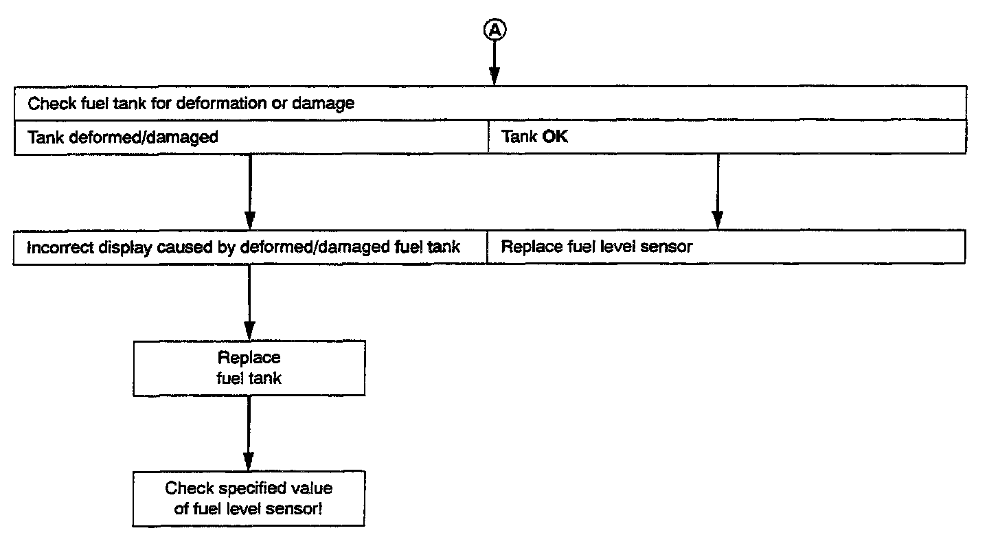

Fuel Level Sensor, Checking



2. FUEL LEVEL SENSOR, CHECKING
Test conditions:
Fuel level sensor correctly installed.
Troubleshooting preparations:
- Switch ignition OFF
- Remove connector at fuel level sensor (G).
- Connect multimeter Fluke 83, set to Ohm range, to fuel level sensor terminals (See Illustration)
- Using fuel storage cart Tempo Products FM 3000 or equivalent, completely empty fuel tank
Fill fuel tank with 7 liters (7.4 quarts) of fuel and check sensor resistance
- must be 179 ohms = 3 ohms